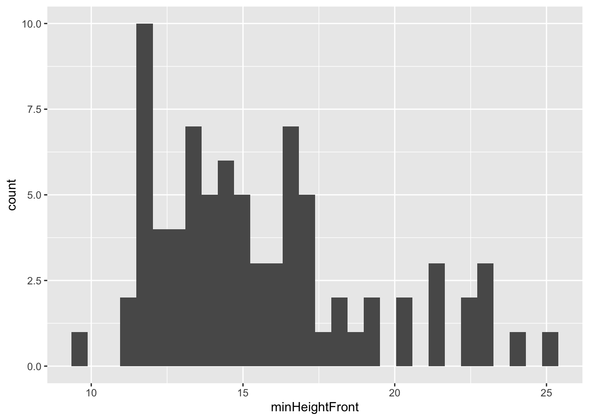
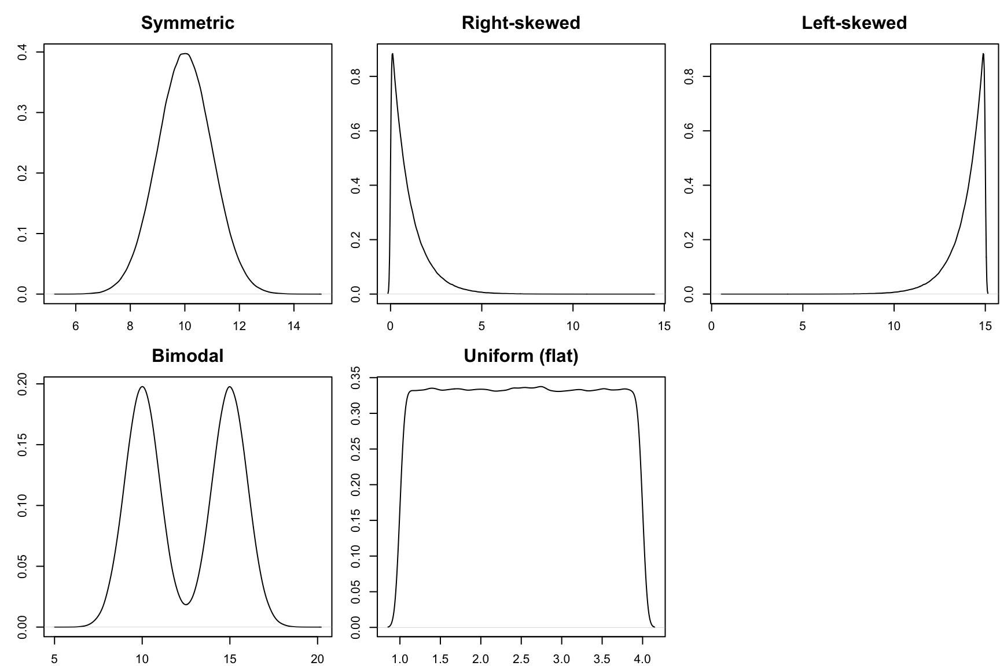
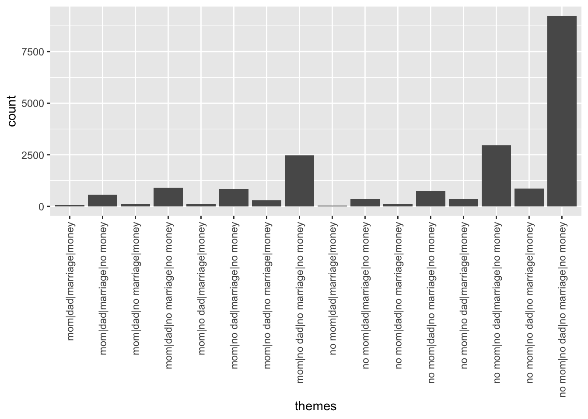
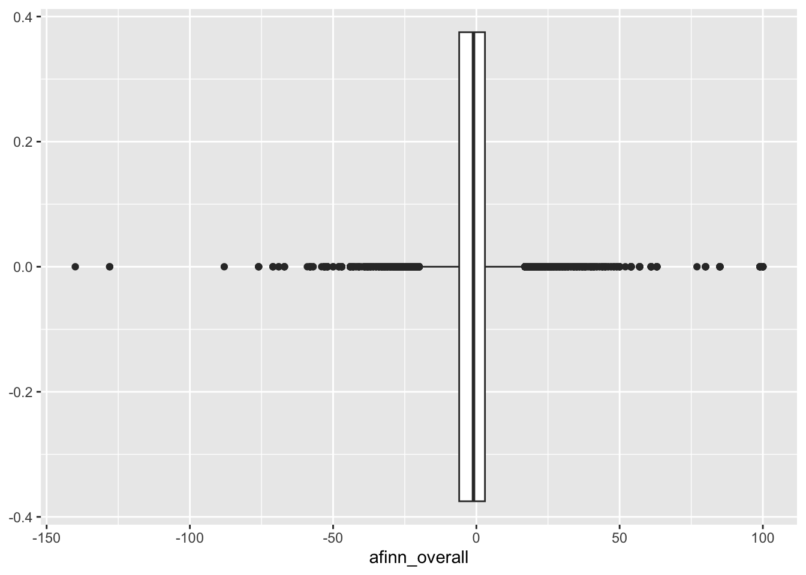
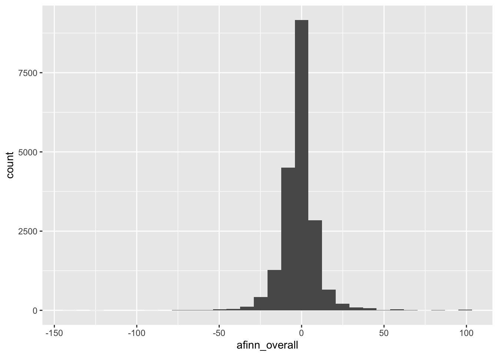
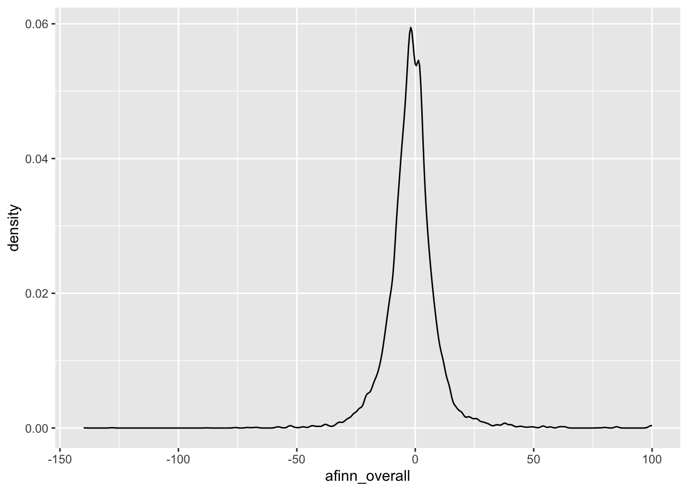
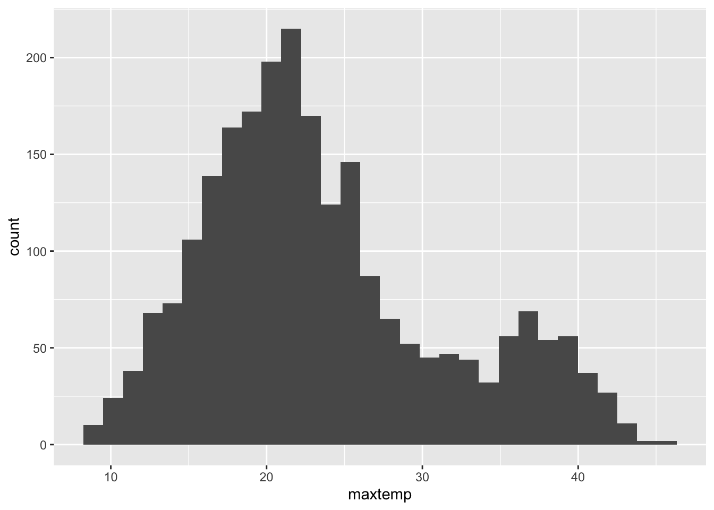
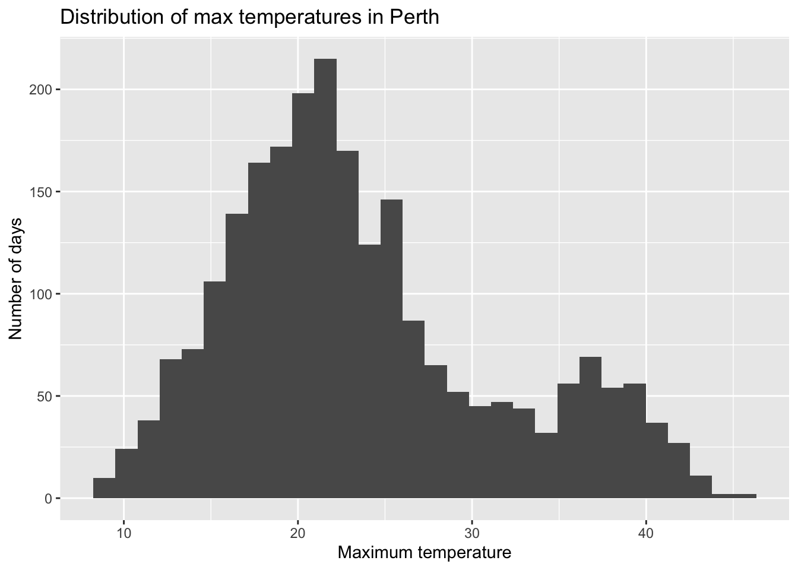

(20*20 + 28*28)/(20+28)[1] 24.66667Notes and in-class exercises
By the end of this lesson, you should be able to:
Before class you should have read and/or watched:
Cases
When Macalester advertises an average class size of 17, what do you think the cases in this dataset represent?
Suppose we had just had 2 classes: one with a class size of 20 and the other with a class size of 28. If the cases are classes, the average class size is 24.
However, if the cases are students, the average class size looks like this:
This is another viewpoint for what “average class size” means from the student perspective.
Note: From the student perspective (when cases are students), average class size will almost always be higher than when cases are classes.
(Thanks to this post for the idea for this example.)
Univariate visualization
In August 2018, the data journalism group The Pudding published an article about the size of men’s and women’s jeans pockets (called Women’s Pockets are Inferior).
We’ll explore this data to review univariate visualization.
(, you are using a function. Look at the text to the left of the ( to see the function name. You can think of function names as verbs. They do things to data.<-, whatever is happening on the right is being stored in a “box” with the label on the left. (So the result of read_csv() is being stored in a “box” called pockets—pockets is the name/label of our dataset.)The documentation (codebook) for this data is available here.
The menWomen variable is a categorical variable. We can use the code below to make a barplot to explore how many men’s and women’s jeans were examined.
+ signs. These indicate “layers” of a plot, kind of like layers of a painting.We can also tabulate categorical variables with the count() function from the dplyr data wrangling/manipulation package.
%>% symbol is called a pipe. It takes the object before it and feeds it in as the first input to the function after it. Whenever you see the pipe symbol, you can replace it in your mind with the words “and then”.# A tibble: 2 × 2
menWomen n
<chr> <int>
1 men 40
2 women 40The minHeightFront variable gives the minimum height of the front pocket and is quantitative. For a single quantitative variable, we can make a boxplot, density plot, or histogram. Let’s look at a histogram:
`stat_bin()` using `bins = 30`. Pick better value with `binwidth`.
When you interpret a plot of a quantitative variable, there are 4 aspects to keep in mind:
Shape: How are values distributed along the observed range? What does the distribution of the variable look like?

Center: What is a typical value of the variable?
Min. 1st Qu. Median Mean 3rd Qu. Max.
9.50 13.00 15.00 15.65 17.00 25.00 Spread: How spread out are the values? Are most values very close together or far apart?
Outliers: Are there any values that are particularly high or low relative to the rest?
A good paragraph putting all of these aspects together:
The distribution of the minimum height of front pockets seems right skewed with values ranging from 9.5 to 25cm. The average pocket height is about 15cm (median). Pocket heights tend to deviate from this average by about 3.5cm (SD), and there don’t seem to be extreme outliers.
File organization: You can download a template file to work with here. Save this file in the “Activities” subfolder of your “STAT155” folder.
Guiding question: What anxieties have been on Americans’ minds over the decades?
Context: Dear Abby is America’s longest running advice column. Started in 1956 by Pauline Phillips under the pseudonym Abigail van Buren, the column continues to this day under the stewardship of her daughter Jeanne. Each column features one or more letters to Abby from anonymous individuals, all signed with a pseudonym. Abby’s response follows each letter.
In 2018, the data journalism site The Pudding published a visual article called 30 Years of American Anxieties in which the authors explored themes in Dear Abby letters from 1985 to 2017. (We only have the questions, not Abby’s responses.) The codebook is available here.
Click on the Environment tab (generally in the upper right hand pane in RStudio). Then click the abby line. The abby data will pop up as a separate pane (like viewing a spreadsheet) – check it out.
In this tidy dataset, what is the unit of observation? That is, what is represented in each row of the dataset?
What term do we use for the columns of the dataset?
Try out each function below. Identify what each function tells you about the abby data and note this in the ???:
?function_name. For example, to pull up a help page for the dim() function, we can type ?dim and hit Enter. Pull up the help page for the head() function.
evals data (instead of the default first 6 rows).In the next exercises, we will be exploring themes in the Dear Abby questions and the overall “mood” or sentiment of the questions. Before continuing, read the codebook for this dataset for some context about sentiment analysis, which gives us a measure of the mood/sentiment of a text.
What sentiment variables do we have in the dataset? Are they quantitative or categorical?
If we were able to create a theme variable that took values like “friendship”, “marriage”, and “relationships”, would theme be quantitative or categorical?
What visualizations are appropriate for looking at the distribution of a single quantitative variable? What about a single categorical variable?
The dplyr package provides many useful functions for managing data (like creating new variables, summarizing information). The stringr package provides tools for working with strings (text). We’ll use these packages to search for words in the questions in order to (roughly) identify themes/subjects.
The code below searches for words related to mothers, fathers, marriage, and money and combines them into a single theme variable.
mutate() the line moms = ifelse(str_detect(question_only, "mother|mama|mom"), "mom", "no mom") creates a new variable called moms. If any of the text “mother”, “mama”, or “mom” (which covers “mommy”) is found, then the variable takes the value “mom”. Otherwise, the variable takes the value “no mom”.dads, marriage, and money variables are created similarly.themes = str_c(moms, dads, marriage, money, sep = "|") line takes the 4 created variables and combines the text of those variables separated with a |. For example, one value of the themes variable is “mom|no_dad|no_marriage|no_money” (which contains words about moms but not dads, marriage, or money).library(dplyr)
library(stringr)
abby <- abby %>%
mutate(
moms = ifelse(str_detect(question_only, "mother|mama|mom"), "mom", "no mom"),
dads = ifelse(str_detect(question_only, "father|papa|dad"), "dad", "no dad"),
marriage = ifelse(str_detect(question_only, "marriage|marry|married"), "marriage", "no marriage"),
money = ifelse(str_detect(question_only, "money|finance"), "money", "no money"),
themes = str_c(moms, dads, marriage, money, sep = "|")
)themes line, and modify the code like this:
YOUR_SUBJECT = ifelse(str_detect(question_only, "WORD1|WORD2|ETC"), "SUBJECT", "NO SUBJECT"),YOUR_SUBJECT = ifelse(str_detect(question_only, "WORD"), "SUBJECT", "NO SUBJECT"),themes variable using the ggplot2 visualization package. Before making the plot, make note of what you expect the plot might look like. (This might be hard–just do your best!) Then compare to what you observe when you run the code chunk to make the plot. (Clearly defining your expectations first is good scientific practice to avoid confirmation bias.)ggplot2 package is great for visualizations, dplyr is great for numerical summaries. The code below constructs a table of the number of questions with each theme. Make sure that these numerical summaries match up with what you saw in the barplot.#) to document what you notice.We’ll look at the distribution of the afinn_overall sentiment variable and associated summary statistics.
summary() function or with the summarize() function from the dplyr package. (1st Qu. and 3rd Qu. stand for first and third quartile.) After inspecting these summaries, look back to your boxplot, histogram, and density plot. Which plots show which summaries most clearly?# Summary statistics
# Using summary() - convenient for computing many summaries in one command
# Does not show the standard deviation
summary(abby$afinn_overall)
# Using summarize() from dplyr
# Note that we use %>% to pipe the data into the summarize() function
# We need to use na.rm = TRUE because there are missing values (NAs)
abby %>%
summarize(mean(afinn_overall, na.rm = TRUE), median(afinn_overall, na.rm = TRUE), sd(afinn_overall, na.rm = TRUE))We took 3 different approaches to plotting the quantitative average course variable above. They all have pros and cons.
Given that Dear Abby column is an advice column, it seems natural that the sentiment of the questions would lean more negative. What’s going on with the questions that have particularly positive sentiments?
We can use the filter() function in the dplyr package to look at the . Based on the plots of afinn_overall that you made in Exercise 5, pick a threshold for the afinn_overall variable—we’ll say that questions with an overall sentiment score above this threshold are high outliers. Fill in this number where it says YOUR_THRESHOLD below.
What do you notice? Why might these questions have such high sentiment scores?
In this activity, we explored data on Dear Abby question, with a focus on exploring a single variable at a time.
In working with and visualizing data, it’s important to keep in mind what a data point represents. It can reflect the experience of a real person. It might reflect the sentiment in a piece of art. It might reflect history. We’ve taken one very narrow and technical approach to data visualization. Check out the following examples, and write some notes about anything you find interesting.
Save this file, and then click the “Render” button in the menu bar for this pane (blue arrow pointing right). This will create an HTML file containing all of the directions, code, and responses from this activity. A preview of the HTML will appear in the browser.
Go to the top of this file and review the learning objectives for this lesson. Which objectives do you have a good handle on, are at least familiar with, or are struggling with? What feels challenging right now? What are some wins from the day?
Response: Put your response here.
If you have time and want additional practice, try out the following exercises.
Daily weather data are available for 3 locations in Perth, Australia.
Check out the basic features of the weather data.
What does a case represent in this data?
The raintoday variable contains information about rainfall.
The maxtemp variable contains information on the daily high temperature.
Though you will naturally absorb some RStudio code throughout the semester, being an effective statistical thinker and “programmer” does not require that we memorize all code. That would be impossible! In contrast, using the foundation you built today, do some digging online to learn how to customize your visualizations.
Check out the ggplot2 cheat sheet. Try making some of the other kinds of univariate plots outlined there.
What else would you like to change about your plot? Try it!
The writers of these questions likely skew roughly 2/3 female (according to Pauline Phillips, who mentions the demographics of responses to a survey she disseminated in 1987), and consequently, their interests are overrepresented; we’ve been unable to find other demographic data surrounding their origins. There is, doubtless, a level of editorializing here: only a fraction of the questions that people have written in have seen publication, because agony aunts (the writers of advice columns) must selectively filter what gets published. Nevertheless, the concerns of the day seem to be represented, such as the HIV/AIDS crisis in the 1980s. Additionally, we believe that the large sample of questions in our corpus (20,000+) that have appeared over recent decades gives a sufficient directional sense of broad trends.
Note how clicking the abby data causes both a popup pane and the command View(abby) to appear in the Console. In fact, the View() function is the underlying command that opens a dataset pane. (View() should always be entered in the Console and NOT your Quarto document.)
Each row / case corresponds to a single question.
Columns = variables
Try out each function below. Identify what each function tells you about the abby data and note this in the ???:
[1] 20034 16[1] 20034[1] 16# A tibble: 6 × 16
year month day url title letterId question_only afinn_overall afinn_pos
<dbl> <dbl> <chr> <chr> <chr> <dbl> <chr> <dbl> <dbl>
1 1985 1 01 proque… WOMA… 1 "i have been… -30 5
2 1985 1 01 proque… WOMA… 1 "this is for… -30 5
3 1985 1 02 proque… LAME… 1 "our 16-year… 1 3
4 1985 1 03 proque… 'NOR… 1 "i was a hap… -3 7
5 1985 1 04 proque… IT'S… 1 "you be the … 13 31
6 1985 1 04 proque… IT'S… 1 "a further w… 13 31
# ℹ 7 more variables: afinn_neg <dbl>, bing_pos <dbl>, moms <chr>, dads <chr>,
# marriage <chr>, money <chr>, themes <chr> [1] "year" "month" "day" "url"
[5] "title" "letterId" "question_only" "afinn_overall"
[9] "afinn_pos" "afinn_neg" "bing_pos" "moms"
[13] "dads" "marriage" "money" "themes" head(abby, n = 10).The sentiment variables are afinn_overall, afinn_pos, afinn_neg, and bing_pos, and they are quantitative. The afinn variables don’t have units but we can still get a sense of the scale by remembering that each word gets a score between -5 and 5. The bing_pos variable doesn’t have units because it’s a fraction, but we know that it ranges from 0 to 1.
theme would be categorical.
Appropriate visualizations:
Code will vary
Expectations about the plot will vary
ggplot(abby, aes(x = themes)) +
geom_bar() +
theme(axis.text.x = element_text(angle = 90, vjust = 0.5, hjust=1))
# A tibble: 16 × 2
themes n
<chr> <int>
1 mom|dad|marriage|money 67
2 mom|dad|marriage|no money 567
3 mom|dad|no marriage|money 109
4 mom|dad|no marriage|no money 906
5 mom|no dad|marriage|money 121
6 mom|no dad|marriage|no money 839
7 mom|no dad|no marriage|money 293
8 mom|no dad|no marriage|no money 2462
9 no mom|dad|marriage|money 41
10 no mom|dad|marriage|no money 350
11 no mom|dad|no marriage|money 96
12 no mom|dad|no marriage|no money 760
13 no mom|no dad|marriage|money 360
14 no mom|no dad|marriage|no money 2967
15 no mom|no dad|no marriage|money 865
16 no mom|no dad|no marriage|no money 9231Now we’ll look at the distribution of the avg_rating variable and associated summary statistics.
ggplot() layer which sets the canvas, then a + to add a layer, then the final layer geom_boxplot() (like geom_bar()) which tells R what type of plot to make.Warning: Removed 490 rows containing non-finite outside the scale range
(`stat_boxplot()`).
geom_boxplot() with geom_histogram() and geom_density().
afinn sentiment score between around -8 to 0.(The -8 to 0 comes from eyeballing where the tallest bar is placed on the x-axis, and the height of this bar indicates how many cases fall into that bin.)`stat_bin()` using `bins = 30`. Pick better value with `binwidth`.Warning: Removed 490 rows containing non-finite outside the scale range
(`stat_bin()`).
Warning: Removed 490 rows containing non-finite outside the scale range
(`stat_density()`).
Min. 1st Qu. Median Mean 3rd Qu. Max. NA's
-140.000 -6.000 -1.000 -1.401 3.000 100.000 490 abby %>%
summarize(mean(afinn_overall, na.rm = TRUE), median(afinn_overall, na.rm = TRUE), sd(afinn_overall, na.rm = TRUE))# A tibble: 1 × 3
mean(afinn_overall, na.rm = TR…¹ median(afinn_overall…² sd(afinn_overall, na…³
<dbl> <dbl> <dbl>
1 -1.40 -1 11.1
# ℹ abbreviated names: ¹`mean(afinn_overall, na.rm = TRUE)`,
# ²`median(afinn_overall, na.rm = TRUE)`, ³`sd(afinn_overall, na.rm = TRUE)`There are some positive words in the questions that seem to pull up the sentiment score a lot despite the negative overall tone. From this we can see the limitations of a basic sentiment analysis in which the sentiment of each word is considered in isolation.
[1] "i am a 36-year-old college dropout whose lifelong ambition was to be a physician. i have a very good job selling pharmaceutical supplies, but my heart is still in the practice of medicine. i do volunteer work at the local hospital on my time off, and people tell me i would have made a wonderful doctor.\nif i go back to college and get my degree, then go to medical school, do my internship and finally get into the actual practice of medicine, it will take me seven years! but, abby, in seven years i will be 43 years old. what do you think?\nunfulfilled in philly"
[2] "we have an only child--a grown daughter we dearly love--and when we pass on, we want to leave her our entire estate, which is considerable.\nthe thing that troubles us is this: our daughter is married to a very unworthy character. for years he has taken advantage of her sweet, forgiving, generous nature because he knows she worships him. we are sure that whatever we leave our daughter will be spent on this dirty dog.\nhow can we prevent this from happening?\nbewildered"
[3] "both of our sons have been married for about 15 years. their wives were of normal weight when they married our sons, but one daughter-in- law weighs about 300 pounds and the other weighs about 225. their ages are 35 and 37. both our sons are good-looking, and neither is fat.\nour daughters-in-law seem to have no pride in their appearance, which upsets everyone in the family, except themselves. they are fat, they know it and they don't care! when they first began to put on weight, they tried various diets, pills, doctors, etc., but they both gave up and decided to \"accept\" themselves as they are.\nthey wear the wrong kind of clothes (shorts and blue jeans) without any apologies.\nour problem (my husband's and mine) is how do we cope with this? we are ashamed to be around them. our sons have accepted the situation, but we seem unable to.\nperhaps we need more help than the girls. any suggestions?\nupset in florida"
[4] "the letter from \"concerned mom,\" who was trying to teach her 5-year-old not to accept gifts from strangers, prompts this letter.\na gentleman friend of mine recently stood in line behind a mother and her young daughter at a bank. the child remarked on the visor he was wearing, as it had the name of a popular pizza imprinted on it.\nmy friend, who is the public relations director for this pizza firm, wanted the child to have the visor but, instead of giving it to the child, he handed the visor to her mother and said to the child: \"i'm giving this to your mother to give to you, because she's probably told you never to accept gifts from a stranger. you won't ever do that, will you?\"\nwhat a thoughtful way to be friendly while reinforcing a message mothers cannot stress enough.\nsue in wichita, kan."
[5] "in january, i sent an original manuscript as a gift to woody allen. i had hand-bound the pages, and decorated the binding with baroque pearls and amethyst. i enclosed my name, address and telephone number. i had hoped that woody would send me a note or call me, or at the very least, instruct his secretary to do so.\nto date, i haven't received even an acknowledgment that my gift was received. is it unrealistic of me to expect a thank-you from a famous person?\ndisappointed in california."
[6] "will you please, please discourage high school and college graduates from sending graduation invitations to every distant relative they and their parents ever heard of? we all know that sending \"invitations\" to people we hardly know is a flagrant, shameless bid for a gift. and if, in a moment of weakness, one does send a gift, a barrage of birth announcements and invitations to weddings, showers and more graduations is sure to follow.\ni am a 75-year-old widow, living on social security and very little else. i just received a high school graduation invitation from the granddaughter of a third cousin whom i have not seen in so long i wouldn't even recognize her. (i have never even met her granddaughter.)\ni have many relatives in this town, but i never hear from them unless they are celebrating something that requires a gift. i have no car, yet they \"invite\" me to every imaginable event, knowing full well i can't possibly attend. this is just shameless begging.\ni am not cheap. i just sent a generous graduation gift to a neighbor girl who used to stop by every day to bring in my mail and newspaper and ask if i needed any errands run.\ndon't suggest that i send \"a nice card\" to the relatives who send me invitations to events they know i can't attend. we both know a card is not what these spongers want.\nsick of them in iowa city"Rows: 2367 Columns: 24
── Column specification ────────────────────────────────────────────────────────
Delimiter: ","
chr (6): location, windgustdir, winddir9am, winddir3pm, raintoday, raintom...
dbl (17): mintemp, maxtemp, rainfall, evaporation, sunshine, windgustspeed,...
date (1): date
ℹ Use `spec()` to retrieve the full column specification for this data.
ℹ Specify the column types or set `show_col_types = FALSE` to quiet this message.Check out the basic features of the weather data.
# A tibble: 6 × 24
date location mintemp maxtemp rainfall evaporation sunshine windgustdir
<date> <chr> <dbl> <dbl> <dbl> <dbl> <dbl> <chr>
1 2020-01-01 Wollongo… 17.1 23.1 0 NA NA SSW
2 2020-01-02 Wollongo… 17.7 24.2 0 NA NA SSW
3 2020-01-03 Wollongo… 19.7 26.8 0 NA NA NE
4 2020-01-04 Wollongo… 20.4 35.5 0 NA NA SSW
5 2020-01-05 Wollongo… 19.8 21.4 0 NA NA SSW
6 2020-01-06 Wollongo… 18.3 22.9 0 NA NA NE
# ℹ 16 more variables: windgustspeed <dbl>, winddir9am <chr>, winddir3pm <chr>,
# windspeed9am <dbl>, windspeed3pm <dbl>, humidity9am <dbl>,
# humidity3pm <dbl>, pressure9am <dbl>, pressure3pm <dbl>, cloud9am <dbl>,
# cloud3pm <dbl>, temp9am <dbl>, temp3pm <dbl>, raintoday <chr>,
# risk_mm <dbl>, raintomorrow <chr>[1] 2367 24A case represents a day of the year in a particular area (Hobart, Uluru, Wollongong as seen by the location variable).
The raintoday variable contains information about rainfall.
raintoday is categorical (No, Yes)The maxtemp variable contains information on the daily high temperature.
maxtemp is quantitative`stat_bin()` using `bins = 30`. Pick better value with `binwidth`.Warning: Removed 34 rows containing non-finite outside the scale range
(`stat_bin()`).
Min. 1st Qu. Median Mean 3rd Qu. Max. NA's
8.60 18.10 22.00 23.62 27.40 45.40 34 # There are missing values (NAs) in this variable, so we add
# the na.rm = TRUE argument
weather %>%
summarize(sd(maxtemp, na.rm = TRUE))# A tibble: 1 × 1
`sd(maxtemp, na.rm = TRUE)`
<dbl>
1 7.80ggplot(weather, aes(x = maxtemp)) +
geom_histogram() +
labs(x = "Maximum temperature", y = "Number of days", title = "Distribution of max temperatures in Perth")`stat_bin()` using `bins = 30`. Pick better value with `binwidth`.Warning: Removed 34 rows containing non-finite outside the scale range
(`stat_bin()`).